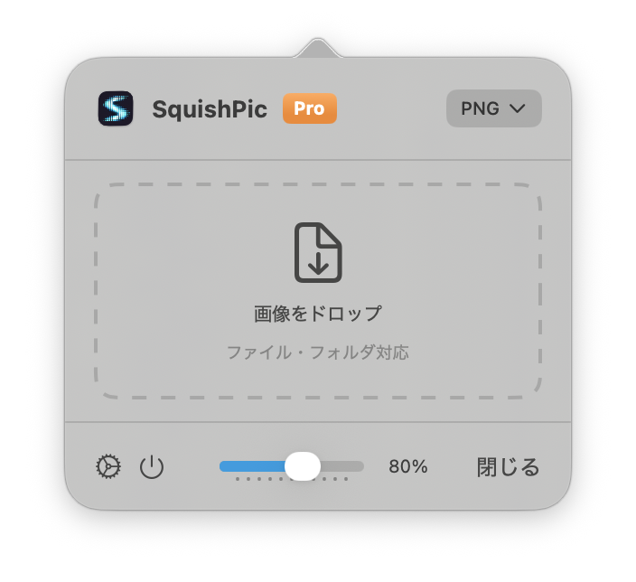
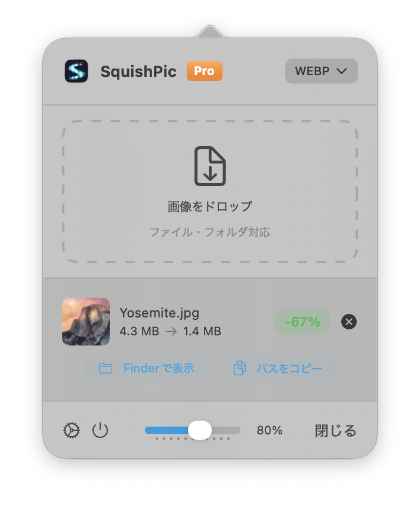
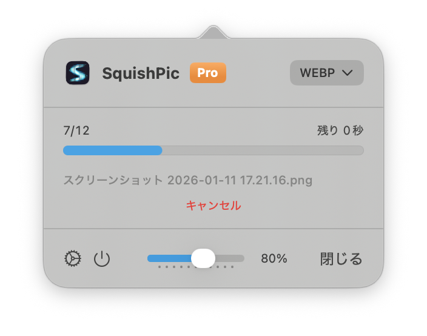
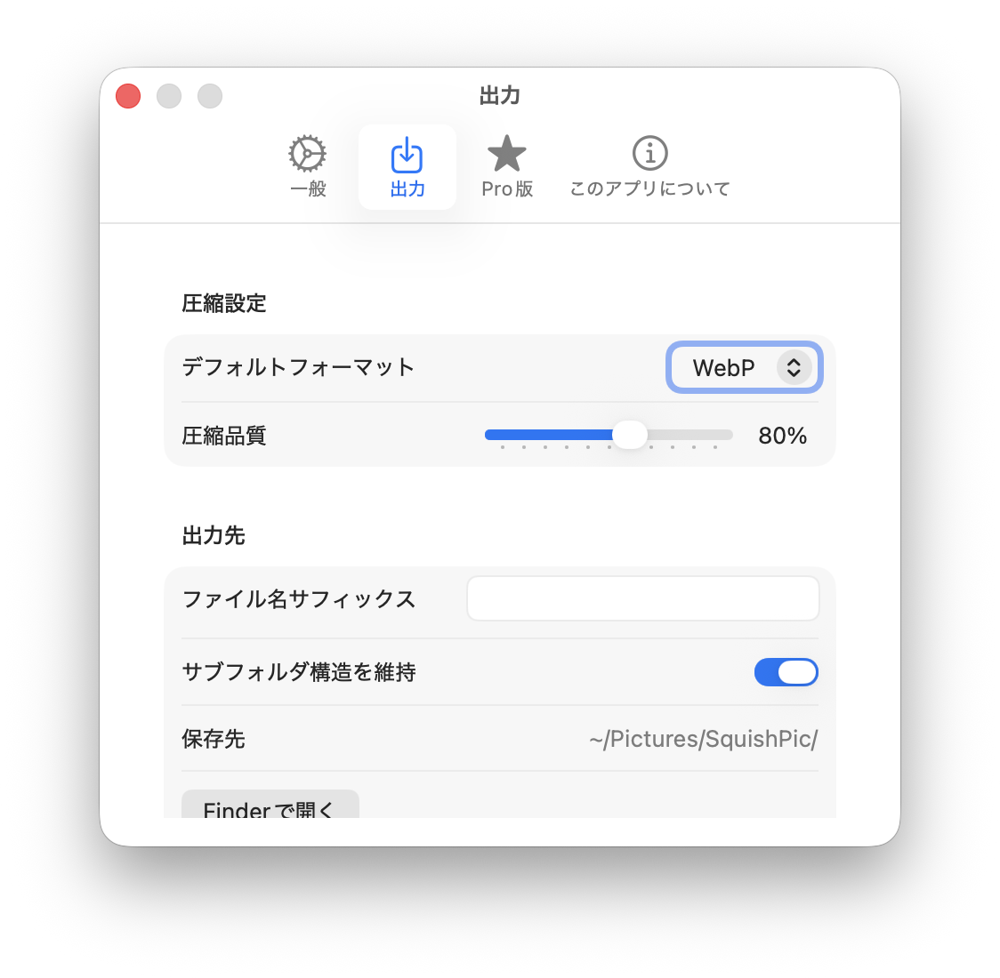
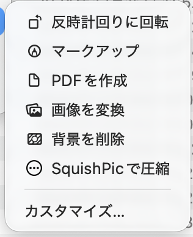

Mac用画像圧縮アプリ
メニューバーからJPEG、PNG、HEIC、WebPを圧縮。
画像もフォルダもドラッグ&ドロップでローカル処理できます。

macOS 13.0 Ventura以降が必要です
機能
画像圧縮に必要なすべてが揃っています
ドラッグ&ドロップ
画像をドロップするだけで瞬時に圧縮
複数フォーマット対応
JPEG、PNG、HEIC、WebP形式に対応
品質調整
50%〜100%の範囲で圧縮品質を調整可能
メタデータ保持
EXIFやGPS情報を保持するオプション
メニューバー常駐
メニューバーに常駐し、いつでもすぐに使える
プライバシー重視
100%ローカル処理。画像がMacから外に出ることはありません
SquishPic Pro
プロフェッショナル向けの強力な機能を解放
¥800買い切り
一括処理 - 複数ファイルをまとめて圧縮
フォルダドロップ - フォルダごとドラッグして圧縮
進捗表示 - 残り時間付きプログレスバー
サブフォルダ構造維持
Finder Quick Action - 右クリックで圧縮
シンプル&クリーンなインターフェース
効率を追求したデザイン
スワイプして表示

ドラッグ&ドロップ
画像を落とすだけで瞬時に圧縮

圧縮結果
ファイルサイズの削減を一目で確認

一括処理
複数ファイルを進捗表示付きで処理

柔軟な設定
出力形式と品質を自由にカスタマイズ

Quick Action
Finderから右クリックで圧縮
サポート
ご質問やお困りの際は、こちらまでお問い合わせください：
support@squishpic.app